-
三维建筑模型设计
以CAD建筑图纸为基础使用
SketchUp构建三维建筑模型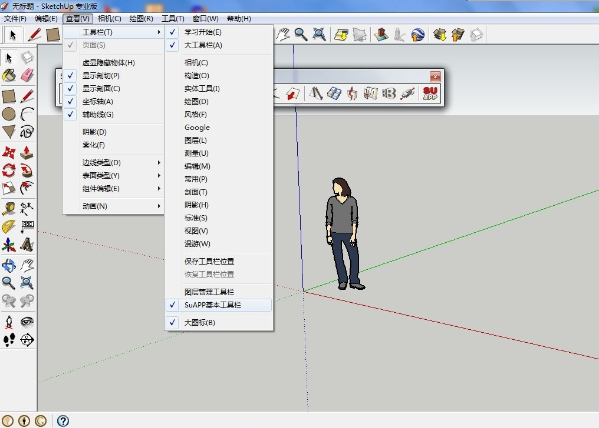
三维建模工具
Google SketchUp是一套直接面向设计方案的以简单易用著称的3D绘图软件，其创作过程不仅能够充分表达设计师的思想而且完全满足与客户即时交流的需要，它使得设计师可以直接在电脑上进行十分直观的构思，是三维建筑设计方案创作的优秀工具。
SketchUp，Google 社区地形图
这是一个社区的俯视地形图，是一个大场景模型设计的基础。
地形 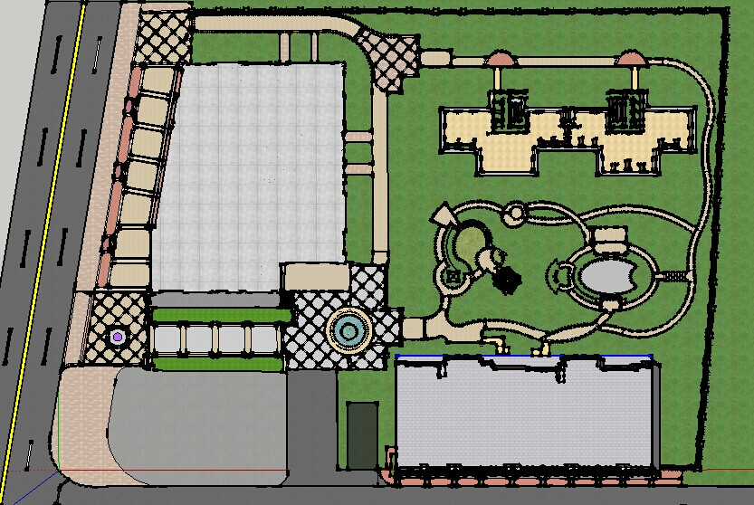
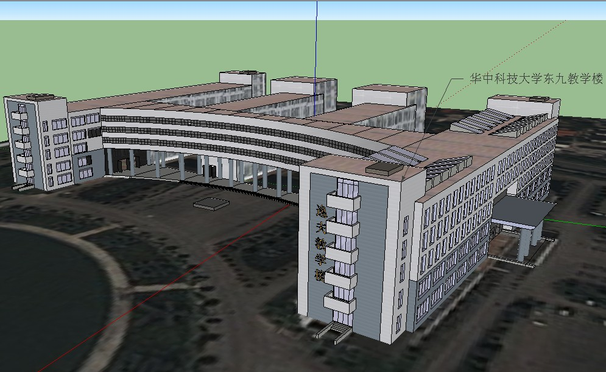
模型骨架
华中科技大学东九教学楼的外壳骨架模型图。
外壳，骨架 内部模型
一个优秀的建筑模型设计不仅要优雅的外观，更要精致的内景，这是一个房子的内部装饰模型设计。
内景 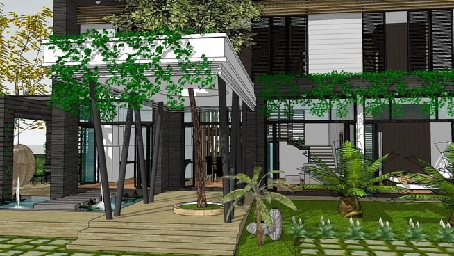
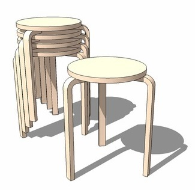
模型材质
完成一个模型的骨架绘制只是完成了第一部，决定一个模型的好坏的更重要因素是在模型贴图设计，一个优秀的UI设计师能让精致模型鲜活起来，这就好木匠雕刻的家具在油漆师傅的手上能价值翻倍。模型设计也是一样的道理，贴图设计能让模型更加优秀。
texture 模型展示
设计好的SU模型可以使用Vary工具渲染得到更加真实美观的效果图。
module -
智慧社区三维仿真
利用开源OGRE3D渲染引擎在PC
上实现社区实景三维仿真和漫游Ogre3D是一个成熟，稳定，可靠，灵活，跨平台，而且拥有丰富功能实时3D图形库。Ogre是引擎的简称，Ogre是一款开源引擎，它也像Linux一样，被各种不同的团体和组织改造和扩充并使它能够适应不同的应用领域和拥有更强大的功能。
ogre3d 社区俯视图
这是使用OGRE3D图形引擎将SU绘制的“武汉东湖明珠”社区的模型在PC机上进行渲染的初期效果图，图中为高空俯视视角。
东湖明珠，社区 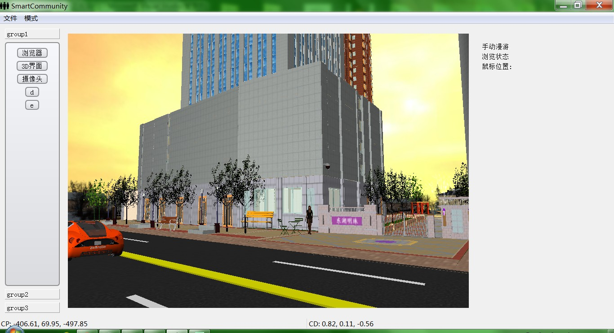
管理系统软件
在window平台上使用VS2010进行系统开发，将整个社区的漫游场景整合到管理平台上，通过一些接口的设计，实现软件中社区场景进行管理维护，并且能实时监测社区中的实景情况。
三维仿真 社区漫游
图中是游客对“东湖明珠”社区的漫游视角。
漫游 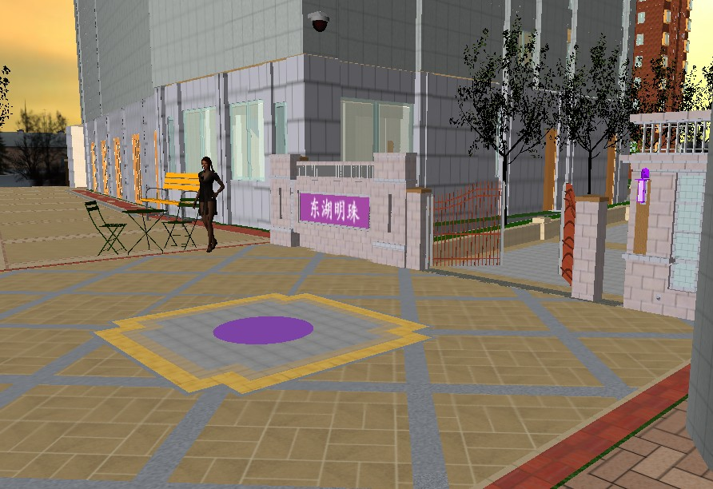
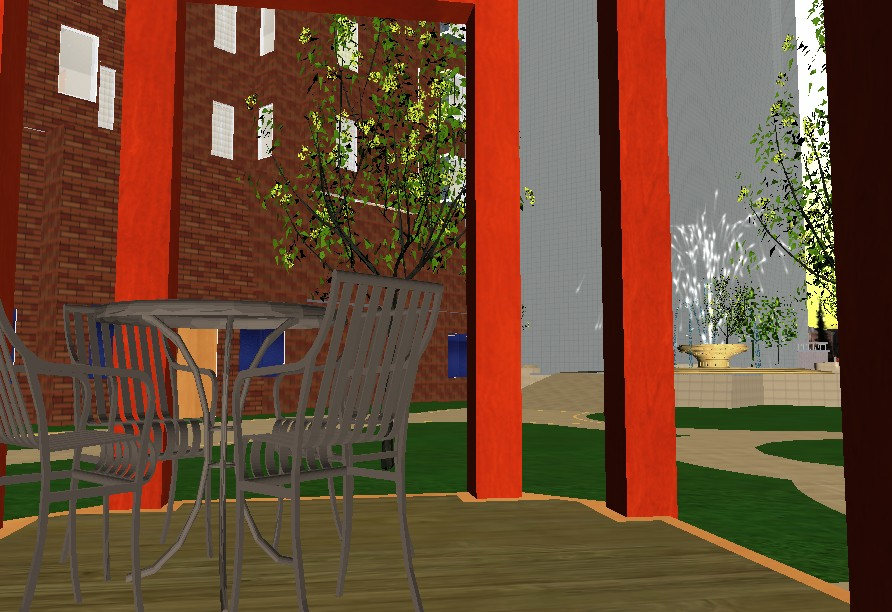
社区内景
“东湖明珠”社区一角，整个系统中包含多套系统，包括漫游，天气，喷泉，门禁，夜间，灯光，以及花草树木等子系统，我们能切换天气，启动喷泉，自动开门，夜间模式，花草树木以及路灯的开关控制等功能模块。
内景，细节 -
交互式学习系统
以Node.js框架使用web技术
实现仪器设备的交互式学习手册NW.js跨平台工具
NW.js是基于Chromium和ode.js运行的，以前也叫nodeWebkit。这就给了你使用HTML和JavaScript来制作桌面应用的可能。在应用里你可以直接调用Node.js的各种api以及现有的第三方包。因为 Chromium 和 Node.js的跨平台，那么你的应用也是可以跨平台的。现在已经有很多知名的应用是基于NW.js实现
nw.js 软件界面
这是和武汉智伴科技公司合作的跨平台的仪器设备通用的交互式学习手册软件，通过本系统软件能帮助仪器设备操作员快速学习设备使用方式，支持在线学习，跟进学习进度。大大缩短企业对新员工的培训周期以及经费。
ui 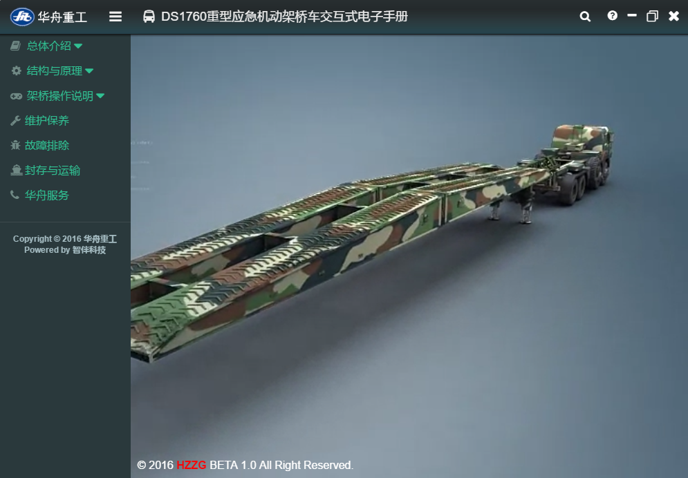
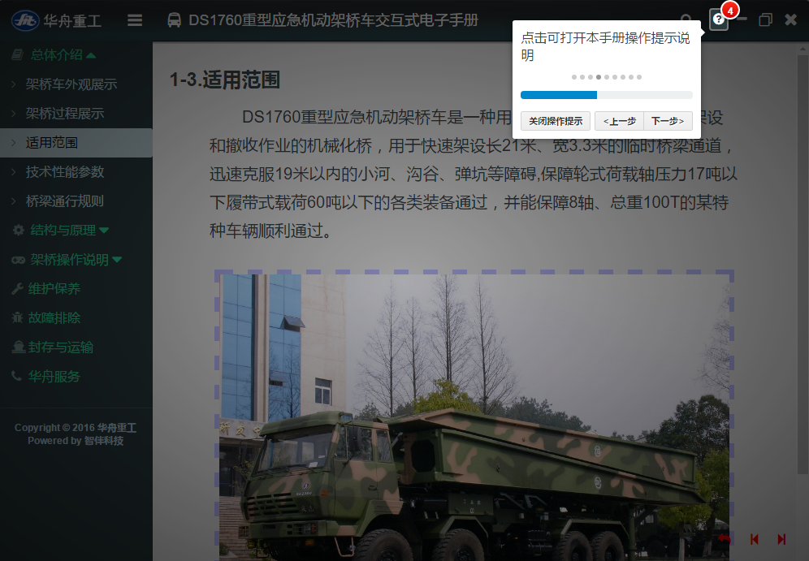
软件使用说明
软件启动就进入软件操作使用说明，方便新用户快速上手，学会本系统的操作。
read-me 内容搜索
内建词条数据库，方便用户能快速搜索想要了解的内容。
search 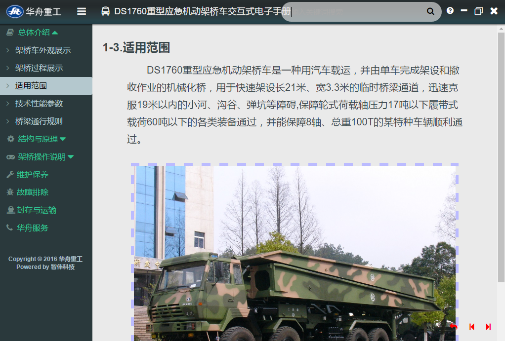
-
Ceph监控系统
在开源工具的基础上进行二次
开发实现Ceph在线实时监控系统
Ceph分布式存储
Ceph提供了统一的对象、块、和文件存储功能，它可靠性高、管理简便、并且开源。Ceph 可提供极大的伸缩性——供成千用户访问PB乃至EB级的数据。Ceph节点以普通硬件和智能守护进程作为支撑点，Ceph存储集群组织起了大量节点，它们之间靠相互通讯来复制数据、并动态地重分布数据。是目前最热门的分布式存储系统之一。
OpenStack是一个开源的云计算管理平台项目，由几个主要的组件组合起来完成具体工作。OpenStack支持几乎所有类型的云环境，项目目标是提供实施简单、可大规模扩展、丰富、标准统一的云计算管理平台。
ceph完美的契合openstack后端存储的需求，ceph的统一存储提供对象，块功能可以给Nova,Cinder,Glance提供高性能的存储服务。目前两者的集成是业界研究热点。ceph，dfs，openstack 集群搭建整合
将Ceph作为Openstack搭建整合是一个比较磨练人的工作，我们在实验室机房中经过几个星期的努力搭建了一套集成系统，在openstack中能够自由创建虚拟机实例，同时虚拟机的用户数据存储在后端ceph集群中。由于整个搭建过程按照官方文档太过繁琐，我们就写了一份安装脚本来方便以后再次搭建。
ceph+openstack 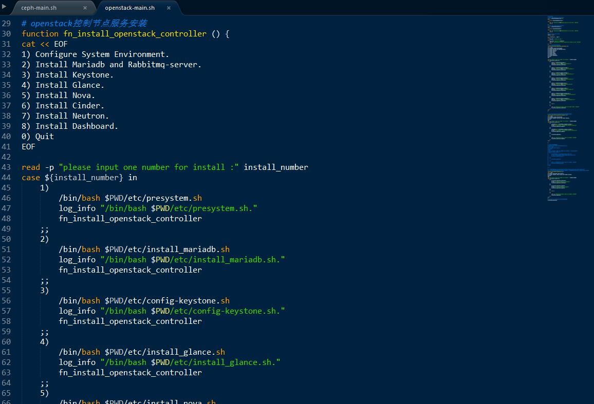
Ceph性能调优
将Ceph作为Openstack的存储后端，将Nova服务部署在ceph的机器上，并且Cinder和Glance都使用ceph的块存储功能进行存储，实现nova计算服务和Cinder存储服务在同一节点上，构成简单的存储融合环境。在这种环境中，对ceph进行针对openstack虚拟机的性能测试以及性能调优。
调优 Ceph监控系统
我们使用Grafana + InfluxDB + Telegraf三种开源的工具组合作为监控系统的蓝本，然后在此基础上进行二次开发针对Ceph运行特性监控ceph的实时运行状态，并对采集的监控数据进行分析预警，提供集群状态预警功能。
监控 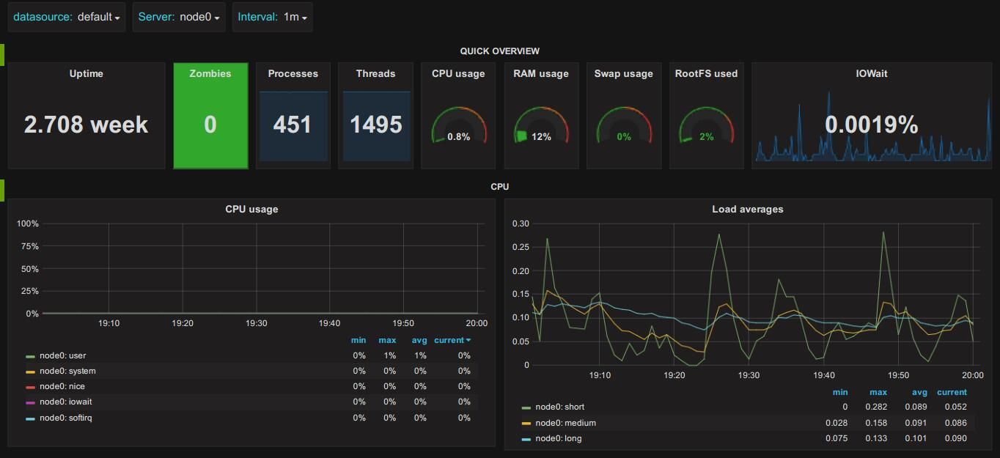
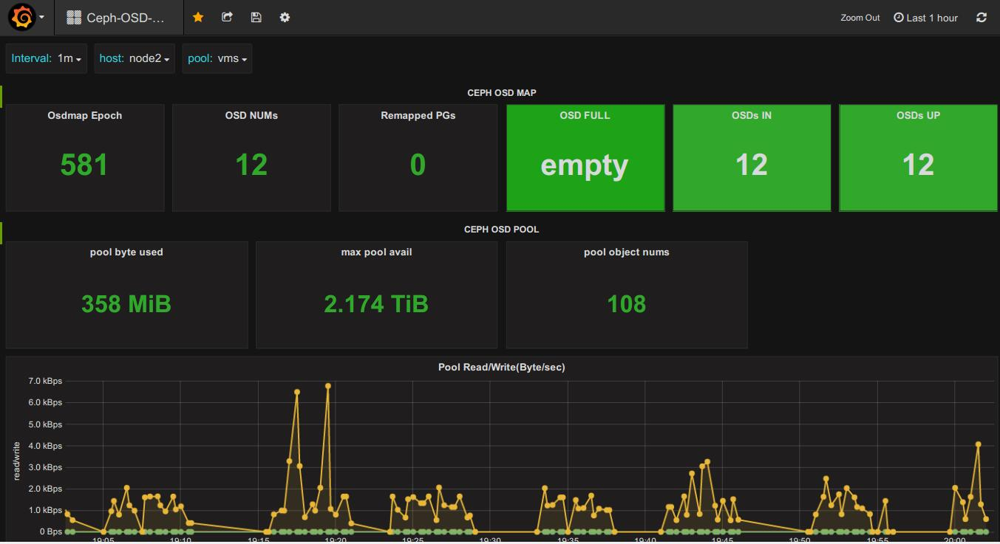
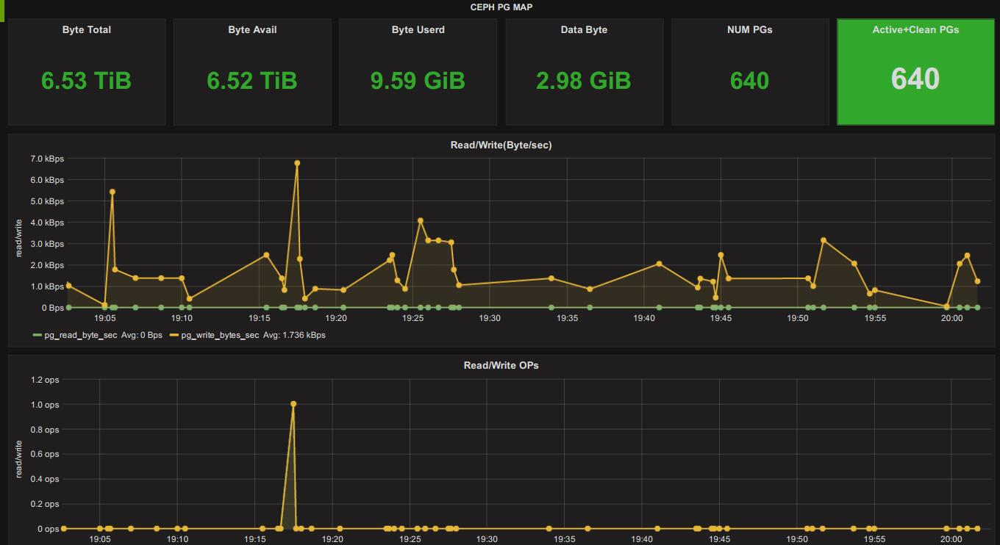
Ceph监控系统
监控效果图
监控